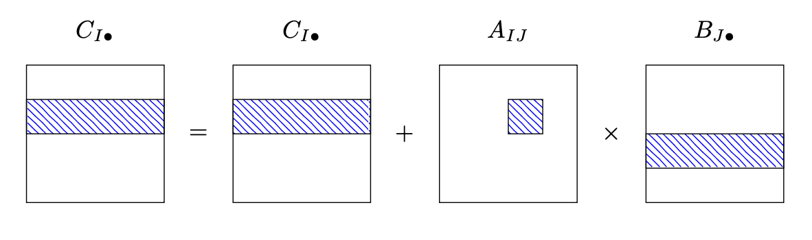

11. Caches#
Large and fast memory is expensive. Thus, computers have typically different kind of memory: The main memory is large and relatively slow, and there is small but fast cache memory. Whenever data is loaded from (or stored to) main memory, it is also stored in cache memory. If the data is reused soon again, it can be quickly fetched from cache memory. When the cache is full, data not used for the longest time is removed. Actually, there are several layers of cache: level-1 is the smallest and fastest, level-2 is larger and slower, and for some computer architectures there is also level-3.
According to Agner Fog, Intel Skylake processors have (Manual 3, Section 11.12):
32 kB level 1 data cache, per core
256 kB - 1 MB level 2 cache, per core
3 - 24 MB level 3 cache, shared among cores
From Wikipedia, Applie Silicon M1 has
128 kB level 1 data cache per performance core
12 MB level 2 cache shared among the 4 performance cores
66 GB/sec bandwidth from main memory
11.1. Measure memory bandwidth#
We measure speed of reading from memory by the timing_mem.cc benchmark. We are summing up entries of a long vector,
using enough accumulators for hiding compute latency. We measure how many GB per second we can load, depending on the vector lengthes. We start the program once to measure for one core, and then we start the same program
4 times in parallel to measure the shared bandwith among the 4 processor cores. The results are here:
{kind=link}
We see a high bandwidth of about \(150 GB/s\), what is close to peak compute performance of about \(20 GFlop/s\) (we have a load to compute ration of 1:1, due to the looping overhead we reach only about \(80\%\) of peak performance). We see clearly a drop by roughly a factor of two around \(100 kB\), what matches with \(128 kB\) level-1 cache. Vectors up to this size stay in level-1 cache. Since we see the same drop for the single-threaded, and the parallel runs, we can confirm that level-1 cache is \(128 kB\) per core. Then we see another drop at about \(10 MB\) for the single thread case, and about \(3MB\) for the parallel case, which confirms the \(12 MB\) level-2 cache shared among cores. We measure about \(60 GB/s\) bandwidth from main memory for the single-thread case, which drops to one fourth if we run the tests in parallel.
That’s it - we cannot do more for vector operations, and neither for matrix-vector products. If the matrix does not fit into cache, it has to be reloaded from main memory for every product. However, for matrix-matrix products there is potential for obtaining peak performance also for large matrices.
11.2. Cache-optimized matrix-matrix multiplication#
Paper by K. Goto and R. van de Geijn: Anatomy of High-Performance Matrix Multiplication, which describes the core idea of matrix multiplication in OpenBLAS, which evolved from GotoBLAS, a recent paper is GEMMFIP.
In the previous section we have studied the inner-most loops to get optimal floating point performance for multiplying matrices of shapes like \(4 \times k\) and \(k \times 12\). However, if we use this kernel repeatedly, we see a drop-down of performance for matrices of larger sizes (like \(1000\times 1000\)).
To overcome this problem, we follow the paper above, and split the matrix multiplication into two levels.
We assume all matrices are stored ColMajor. We decompose the \(A\) matrix into blocks which fit well into
level-2 cache, something like \(100 \times 100\), what corresponds to \(80 kB\). Since our micro-kernels use blocks which could be multiples of the SIMD-size, and also multiples of \(3\), a block-size of \(96 \times 96\) might be a good choice to
avoid unnecessary leftover.
We loop over the blocks \(A_{IJ}\) of \(A\), copy the block into local memory, update the corresponding rows \(I\) of the result matrix \(C\) by multiplyging \(A_{IJ}\) with the rows \(J\) of factor \(B\):
{kind=link}
To access rows and cols of matrices, the MatrixView object is useful:
void AddMatMat (MatrixView<> A, MatrixView<> B, MatrixView<> C) {
constexpr size_t BH=96;
constexpr size_t BW=96;
alignas (64) double memBA[BH*BW];
for (size_t i1 = 0; i1+BH <= A.Height(); i1 += BH)
for (size_t j1 = 0; j1+BW <= A.Width(); j1 += BW) {
size_t i2 = min(A.Height(), i1+BH);
size_t j2 = min(A.Width(), j1+BW);
MatrixView Ablock(i2-i1, j2-j1, BW, memBA);
Ablock = A.Rows(i1,i2).Cols(j1,j2);
AddMatMat2 (Ablock, B.Rows(j1,j2), C.Rows(i1,i2));
}
}
In each inner iteration we copy at most BH*BW values, and perform BH*BW*C.Width() fused multiply-add operations,
the time needed for copying can be neglected if the width of B and C is large.
In the inner function AddMatMat2 we are now using the micro-kernel for updatig small (like \(4 \times 12\)) blocks of \(C\):
{kind=link}
void AddMatMat2 (MatrixView<> A, MatrixView<> B, MatrixView<> C) {
constexpr size_t H=4;
constexpr size_t W=12;
for (size_t j = 0; j+W <= C.Width(); j += W)
for (size_t i = 0; i+H <= C.Height(); i += H)
AddMatMatKernel<H,W> (A.Width(), &A(i,0), A.Dist(),
&B(0,j), B.dist(), &C(i,j), C.Dist());
// leftover rows and cols
}
Now, entries from both factors \(A\) and \(B\) will stay in caches:
The entries of a slim block from \(B\) are loaded from main memory. They are reused frequently in every iteration over the height of \(C\), and will stay in level-1 cache. Since every \(B\) entry is used in \(C.Height() \approx 96\) multiplications, the time for loading from memory is small in comparison to floating point operations.
All entries of the \(A\) block are reused after the \(A\) block is used completely. Only a slim block from \(B\) is loaded in the meanwhile. So, the whole \(A\) block stays in the level-2 cache.